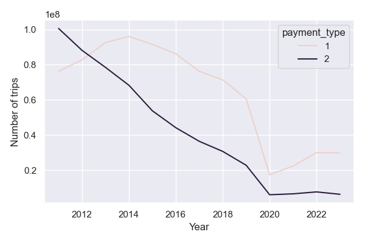

Larger than memory datasets in Python using Polars
While Pandas is still the go-to Python package for data analysis, there are now a new generation of data analysis tools which are much faster and better suited to working with data that is larger than the available memory. It isn’t unusual to encounter a dataset around 10Gb in size which is usually just large enough to be awkward to work with on a single machine.
This article is a summary of some tinkering with these tools. These turn out to be very useful for the kinds of data that I use in my day job. The goal is to answer the questions:
- Why use a package such as Polars instead of Pandas?
- How does the speed compare?
- How to write Polars code?
- When to use one and not the other?
In addition to Polars, there are other tools in this area, including DuckDB and Ibis. And if you are using R there is an excellent tutorial on how to use the Arrow package for working with large datasets.
Querying data in Pandas: the messy way and the pretty way
First let’s download a largish dataset. GNAF Core is a quarterly-updated dataset containing all street addresses in Australia. It’s a single csv (well actually psv file) around 3.2Gb in size, so can fit in memory and analysed using Pandas.
Let’s load data and carry out some simple transformations.
import pandas as pd
gnaf = pd.read_csv('gnaf_core.psv', sep='|')
gnaf.shapeThis is a dataframe with 15.6 million rows and 27 columns. Let’s group the number of addresses in postcode 3000 (City of Melbourne) by street name and count how many there are.
One way to do this is as follows:
# filter to postcode 3000
gnaf_melbourne = gnaf[gnaf['POSTCODE'] == 3000]
# count the number of addresses per street in postcode 3000
melbourne_street_counts = gnaf_melbourne.groupby('STREET_NAME').size()
# sort the data in descending order by the number of addresses
melbourne_street_counts.sort_values(ascending=False)We should see that the top 5 streets are LONSDALE, ABECKETT, COLLINS, LITTLE LONSDALE, LA TROBE which have over 7000 addresses, while streets like HEAPE, HARWOOD, RACING CLUB and DOMAIN each have only one address.
A nicer way of writing this code is to chain these statements into a single query. I learned this from reading Matt Harrison’s tweets and articles.
gnaf.query('POSTCODE == 3000').groupby('STREET_NAME').size().sort_values(ascending=False)Notice that this uses the query method to filter the addresses and then a sequence of methods to carry the remaining operations. In a slightly more readable form
(
gnaf
.query('POSTCODE == 3000')
.groupby('STREET_NAME')
.size()
.sort_values(ascending=False)
)This sequence of transformation now reads as a single ‘recipe’ with each transformation appearing in a single line, making it all much easier to interpret. It more closely resembles dplyr code in R and as we will see later, Polars code. It also avoids creating unneccessary variables and memory in the intermediate steps. So far, so good.
Let’s answer another question: What is the distribution of starting letters for streets in New South Wales?
(
gnaf
.query('STATE == "NSW"')
.STREET_NAME
.str.slice(0, 1)
.value_counts()
)And the most common starting letter for a street name is B with 383,483 addresses. So now we can write slick, easy to read queries in Pandas, and this leads us to the main subject of this article: Polars.
Why Polars?
I have only recently started playing around with Polars but it’s proving to be a better alternative to Pandas for large datasets. I am definitely not an expert in this area, and there are other packages such as Ibis and DuckDB are being widely used as well.
The API for Polars may feel a bit unintuitive at first, but less so once you’re familiar with the method chaining approach to writing Pandas transformations as described above. In any case, it’s all well documented on the Polars webpage
import polars as pl
gnaf = pl.read_csv('GNAF_CORE.psv', separator='|', infer_schema_length=10000)
gnaf.shapeThe first thing you should notice is the speed in loading the csv. We’ll do a comparison with Pandas later.
(
gnaf
.filter(pl.col("POSTCODE") == 3000)
.group_by("STREET_NAME")
.count()
.sort('count', descending=True)
)Aside from some annoying differences in syntax (e.g., using descending instead of ascending to sort the dataframe), the overall code looks very similar. And now for the second transformation that counts the number of street names in New South Wales starting with different letters.
(
gnaf
.filter(pl.col('STATE') == "NSW")
.select(pl.col("STREET_NAME"))
.with_columns(pl.col("STREET_NAME").str.slice(0, 1).alias("letter"))
.group_by('letter')
.count()
.sort('count', descending=True)
)Ok, not quite as elegant, especially with the with_columns syntax but it gives the same results.
Comparing the speeds
So loading the csv file was faster, let’s compare how fast
t1 = time()
gnaf = pl.read_csv(filename, separator='|', infer_schema_length=10000)
t2 = time()
print(t2-t1)
t1 = time()
gnaf = pd.read_csv(filename, sep='|')
t2 = time()
print(t2-t1)On my Macbook M3, Polars takes around 1.7s and Pandas around 39.1s, so Polars is over 20 times faster at loading this csv file!
t1 = time()
(
gnaf
.filter(pl.col('STATE') == "NSW")
.select(pl.col("STREET_NAME"))
.with_columns(pl.col("STREET_NAME").str.slice(0, 1).alias("letter"))
.group_by('letter')
.count()
.sort('count', descending=True)
)
t2 = time()
print(t2-t1)
t1 = time()
(
gnaf
.query('STATE == "NSW"')
.STREET_NAME
.str.slice(0, 1)
.value_counts()
)
t2 = time()
print(t2-t1)Around 1.3s in Polars and 2.4s in Pandas.
t1 = time()
(
gnaf
.filter(pl.col("POSTCODE") == 3000)
.group_by("STREET_NAME")
.len()
.sort('len', descending=True)
)
t2 = time()
print(t2 - t1)
gnaf = pd.read_csv(filename, sep='|')
t1 = time()
results = (
gnaf
.query('POSTCODE == 3000')
.groupby('STREET_NAME')
.size()
.sort_values(ascending=False)
)
t2 = time()
print(t2-t1)1.39s in Polars and 0.43s in Pandas. So Pandas is the winner here.
Another speed up: parquet files
Rather than using csv files we can convert them to parquet. This is a binary file format that represents tabular datasets as columns rather than rows; both of these properties result in smaller file sizes that are quicker to load and faster to analyse. A more in-depth explanation for why this is the case can be found in this article by Wes McKinney, the creator of Pandas.
The original file is 3.2Gb in csv format but when converted to parquet it’s 970Mb. This is a decent saving on space. From experience Parquet files can be up to 10% the size of csv file.
# load in pandas
t1 = time()
gnaf = pd.read_parquet(filename)
t2 = time()
print(t2-t1)
# load in polars
t1 = time()
gnaf = pl.read_parquet(filename)
t2 = time()
print(t2-t1)1.3s in Polars and 14.1s in Pandas.
Lazy evaluation
The real benefit of using polars is that queries can be executed using so-called lazy evaluation, rather than loading the data into memory first.
This involves the use of scan_parquet or scan_csv which essentially creates a pointer to the file on the disk.
gnaf = pl.scan_parquet(filename)
t1 = time()
(
gnaf
.filter(pl.col("POSTCODE") == 3000)
.group_by("STREET_NAME")
.len()
.sort('len', descending=True)
.collect()
)
t2 = time()
print(t2 - t1)The only difference is that a collect() method is appended to the end of the query so that it actually runs. The result: only 0.08 seconds! I was surprised about how much faster this is. Let’s see how fast the earlier query runs:
t1 = time()
(
gnaf
.filter(pl.col('STATE') == "NSW")
.select(pl.col("STREET_NAME"))
.with_columns(pl.col("STREET_NAME").str.slice(0, 1).alias("letter"))
.group_by('letter')
.len()
.sort('len', descending=True)
.collect()
)
t2 = time()
print(t2-t1)Which takes 0.25 seconds.
Larger than memory datasets
Since the main point of this article is to better understand how to work with larger than memory data in Python, let’s look at a collection of datasets from New York City taxi trips. From 2011 to 2023 these files total to around 20Gb and are fortunately already in parquet format.
Some work is needed to transform the data so that each file has the same column names and datatypes. This is done in this notebook. We can then ‘lazy load’ all the parquet files as follows
nyc_yaxis = pl.scan_parquet('taxi_trips/*.parquet')And we can do some basic queries
# how many rows?
nyc_taxis.select(pl.len()).collect()
# what is the median fare?
nyc_taxis.select(pl.median('fare_amount')).collect()
# what is the distribution of passenger counts?
(
nyc_taxis.group_by('passengder_count')
.len()
.sort('len', descending=True)
.collect()
.head(10)
)There are around 1.4 billion trips, with a median fare of $9. These queries are all run out of the memory so can take 10s or so.
Finally let’s consider a more interesting question: how do credit card vs cash payments vary over time?
payment_types_year = (
nyc_taxis
.with_columns(pl.col('tpep_pickup_datetime').dt.year().alias('pickup_year'))
.group_by(pl.col(['pickup_year', 'payment_type']))
.len()
.filter(pl.col('pickup_year').is_in(list(range(2011,2024))))
.filter(pl.col('payment_type').is_in([1,2]))
.sort(pl.col('pickup_year'))
.collect()
)
plt.figure(figsize=(6, 4))
sns.lineplot(data=payment_types_year.to_pandas(), x='pickup_year', y='len', hue='payment_type')
plt.xlabel('Year')
plt.ylabel('Number of trips')
plt.show()
Which illustrates some of the trends driven by the adoption of Uber; the COVID-19 pandemic; and the increasing use of credit card payments in lieu of cash.
Lessons
To summarise:
Use parquet files rather than csv where possible to reduce storage and speed up querying.
If using pandas for data analysis, write data transformations as single queries involving method chaining, rather than in multiple steps. This not only makes code easier to read, but easier to debug and removes so-called ‘side-effects.’
Switch to a package like Polars to significantly speed up data analysis workflows.
Use lazy evaluation to avoid loading data into memory and further speed up queries.